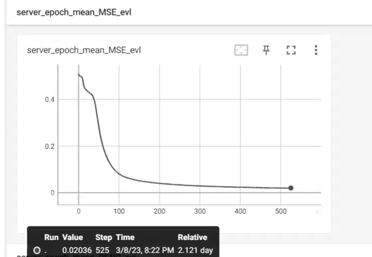
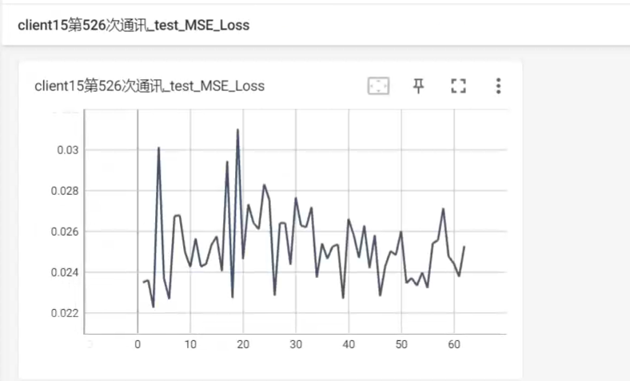
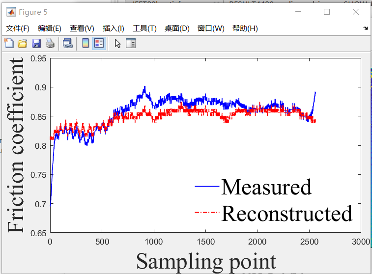
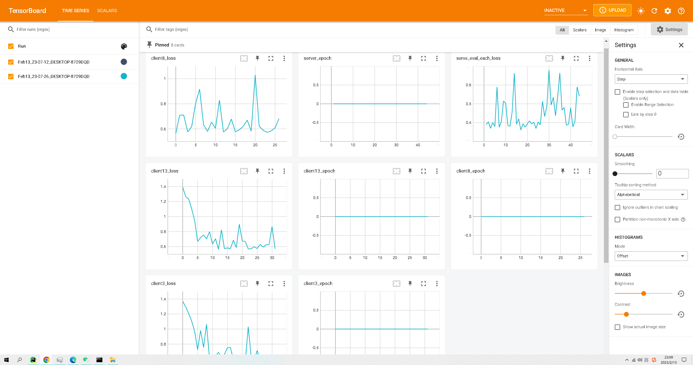
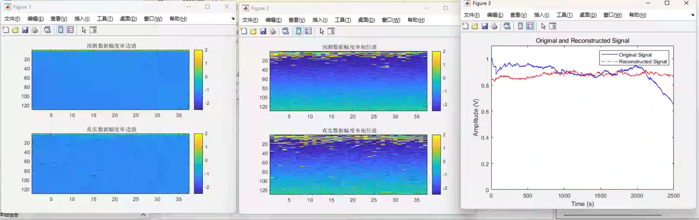

基础模型
Uformer 面向图像去噪等低层视觉任务，采用局部增强窗口 Transformer 与跳跃连接设计。
来源：README.md 标题；model.py 文件头注释（引用 arXiv:2106.03106）
本仓库将 Uformer（通用 U 型 Transformer 图像复原网络）扩展至联邦学习场景， 在数据分布于多个客户端、无法集中上传的前提下，通过服务端聚合实现协同训练。
Uformer 面向图像去噪等低层视觉任务，采用局部增强窗口 Transformer 与跳跃连接设计。
来源：README.md 标题；model.py 文件头注释（引用 arXiv:2106.03106）
默认配置为图像去噪（mode=denoising），数据集默认为 SIDD。
options.py — dataset、mode 默认值
README 记载：拟合性能经验证，在通信次数约 1000 次范围内模型收敛至 SOTA 水平（原文表述，未给出具体数值指标）。
来源：README.md 第 12 行 — 作者自述，非独立基准测试报告
sr/README.md，与本仓库联邦实验为不同设定。
以下参数与行为均来自 options.py 默认值及 server.py / README.md 描述。
| 配置项 | 默认值 | 说明 | 来源 |
|---|---|---|---|
| 客户端总数 | 16 |
num_of_clients |
options.py |
| 每轮参与比例 | 0.25 |
每轮随机选取 4 个客户端（cfraction） |
options.py；README.md |
| 通信轮次 | 2000 |
num_comm；README 另提及约 1000 次收敛 |
options.py；README.md |
| 数据划分 | 训练 : 验证 = 8 : 2 | 互不重复、相互独立 | README.md |
| 采样方式 | IID=-1 |
随机采样等差分布（注释说明） | options.py |
| 聚合策略 | 参数均值 | sr_weight=1 时对参与客户端参数取平均 |
server.py L264–277 |
| GPU 约束 | ≤ 4 | 客户端数量不能大于显卡数量；README 记载训练机为 4×V100 32G | README.md |
server.py 通信循环与聚合逻辑；README.md 结构介绍
server.py（多线程），README 记载运行无问题。server_Multiprocess.py：多进程实现，README 记载有概率死锁，不建议使用。cuda:0 上进行（README 记载不可更改设备）。DataLoader 的 num_workers 必须为 0，否则可能死锁。README.md；options.py train_workers/eval_workers 默认 0
arch=Uformer，embed_dim=32，win_size=8，train_ps=128。
options.py
优化器 AdamW（lr=2e-4），损失函数 CharbonnierLoss，可选 warmup + cosine 学习率。
options.py；server.py L170–171
batch_size=14，nepoch=1（每轮通信本地 epoch 数）。每通信一次保存一个模型，无 early stopping。
options.py；README.md
python server.pypython test.py（需配置测试集与保存路径）tensorboard --logdir=<save_path>README.md 使用文档
README 记载本项目使用以下指标，并通过 TensorBoard 可视化全部评估结果：
MSE。README.md 评估指标章节
server_epoch_mean_MSE_evl、server_epoch_mean_MAE_evl、server_epoch_mean_PSNR_evltest_MSE_Loss、test_MAE_Loss、test_PSNR_Loss 等README.md TensorBoard 命名规则；server.py add_scalar 调用
以下 5 张图为 README.md 所载用户附图（原托管于 GitHub user-images），
已本地化至 docs/assets/。图示仅作 README 实验记录展示，不附加未记载的数值结论。

server_epoch_mean_MSE_evl。图中可见曲线在约 525 步处记录值约为 0.020（悬停提示，以原图为准）。
来源：README 第 1 张附图；对应 server.py TensorBoard 命名

client15第526次通讯_test_MSE_Loss，展示该客户端在单次通信周期内的测试 MSE 批次波动。
来源：README 第 2 张附图


client3_loss、client8_loss、client13_loss 及 serve_eval_each_loss 等标量曲线；
运行记录时间为 2023-02-13（图中任务栏显示）。
来源：README 第 4 张附图

/home/hyzb/user_wanghongzhou/SR_Test/right_resume_False_num_comm_2000_client_16_gpuclient_4_batchsize_14_nepoch_1_IID_False_Neo等差_warmup_True
来源：README.md L115–116
以下内容均摘自 README.md 与源码注释，为仓库作者已披露的限制：
nohup 启动服务端会报错且无法解决。num_workers > 0 会导致资源争抢死锁，程序不报错但 GPU 停止计算。README.md 结构介绍与使用文档；options.py
pip install -r requirements.txt（PyTorch 1.7.1 等，见 requirements.txt）options.py 配置数据路径、save_path、GPU 等参数python server.pytensorboard --logdir=<save_path>，浏览器访问 ip:6006python test.py，运行前清空目标保存目录中的 .mat 文件README.md 使用文档；requirements.txt
model.py / sr/README.md）README.md、options.py、server.py、clients.py、requirements.txt 等仓库内文件；未引用外部未验证结论
若发现展示内容与源码不一致，以 GitHub 仓库最新代码为准。
本页最后构建自分支 cursor/github-pages-showcase-faea。